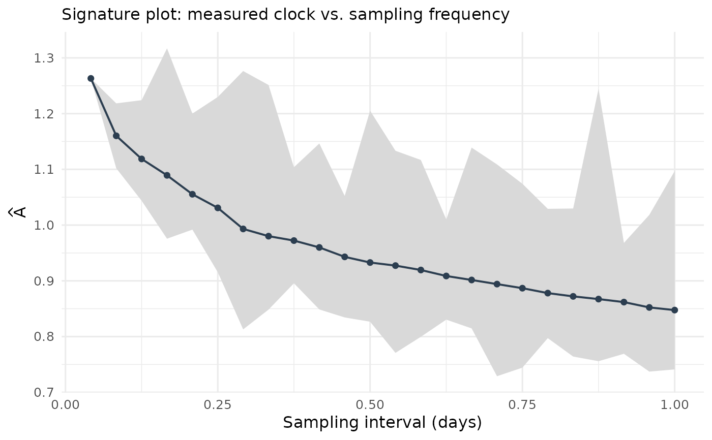

Computes the clock estimate \(\widehat A\) across sampling frequencies — the analogue of the volatility signature plot. For each subsampling step \(k\), the realized variation is averaged over all \(k\) possible offsets of the sparse grid. A pronounced increase of \(\widehat A\) at the finest frequencies signals microstructure noise (bid-ask bounce on a coarse tick grid); a flat signature means the clock is measured cleanly.
Usage
ec_signature(x, max_every = 10, from = NULL, to = NULL, clip = NULL)
# S3 method for class 'ec_signature'
plot(x, ...)Arguments
- x
An
event_pricesobject (seeas_event_prices()), or adata.framecoercible to one.- max_every
Integer, largest subsampling step (default 10).
- from
Valuation date/time (default: first observation).
- to
One or more horizon dates/times (default: last observation = full sample). Names are used as horizon labels.
- clip
Numeric length-2 clipping bounds for
qbefore the log-odds transform; defaults to the bounds stored inx.- ...
Unused (for the
plotmethod).
Value
A tibble of class ec_signature with columns
- sample_every
subsampling step \(k\).
- spacing_days
median spacing of the sparse grid in days.
- n_incr
average number of increments per offset grid.
- A
realized variation averaged over the \(k\) offsets.
- A_min, A_max
range over the offsets.
Methods (by generic)
plot(ec_signature): Plot method; dispatches toplot_signature().
Examples
data(polymarket2024)
sig <- ec_signature(as_event_prices(polymarket2024), max_every = 24)
head(sig)
#> # A tibble: 6 × 6
#> sample_every spacing_days n_incr A A_min A_max
#> <int> <dbl> <dbl> <dbl> <dbl> <dbl>
#> 1 1 0.0417 3790 1.26 1.26 1.26
#> 2 2 0.0833 1894. 1.16 1.10 1.22
#> 3 3 0.125 1263. 1.12 1.04 1.22
#> 4 4 0.167 947. 1.09 0.976 1.32
#> 5 5 0.208 757. 1.06 0.992 1.20
#> 6 6 0.25 631. 1.03 0.915 1.23
plot_signature(sig)
